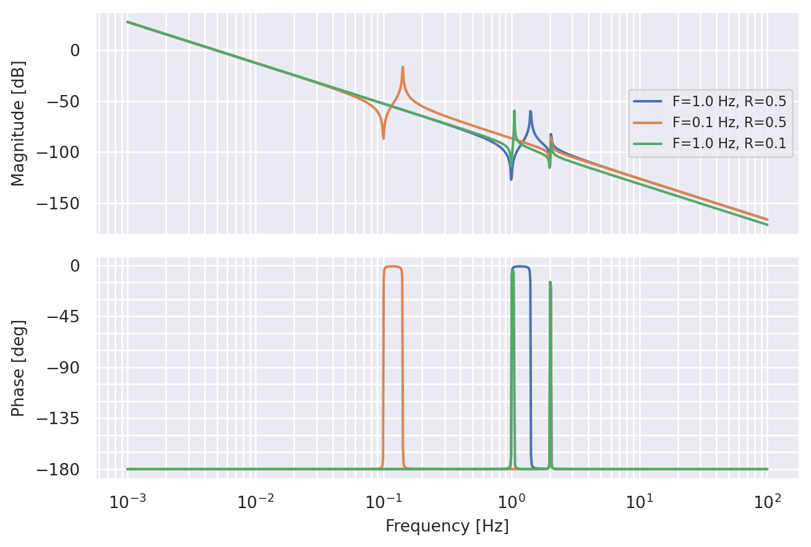
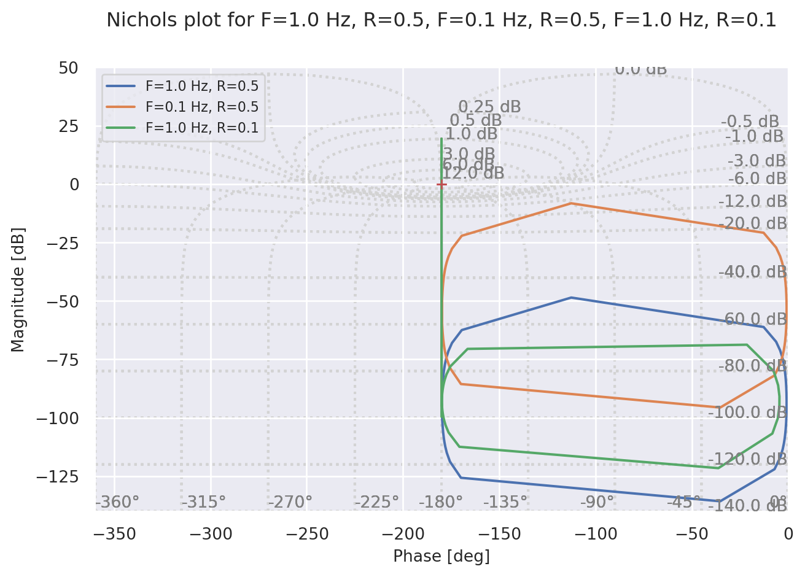
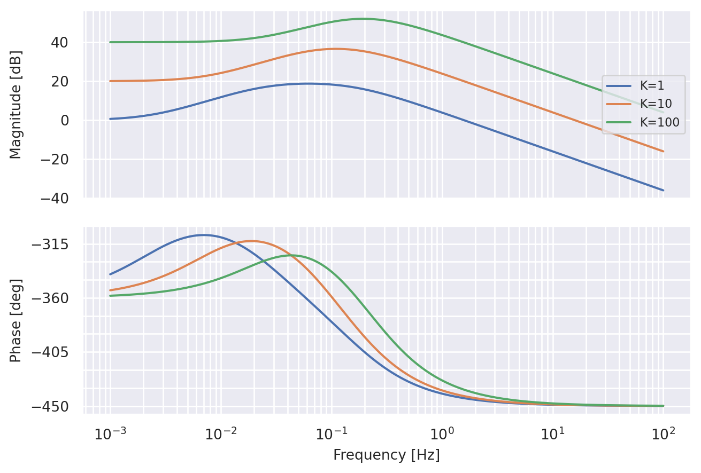
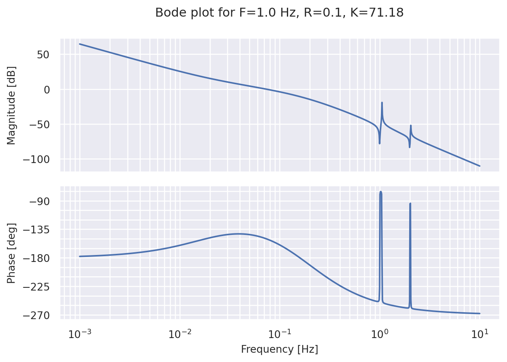
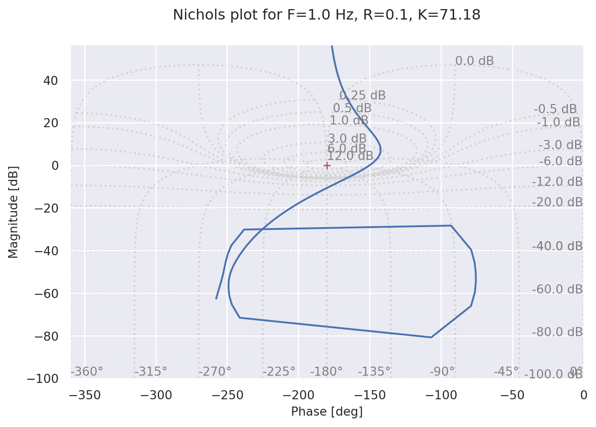
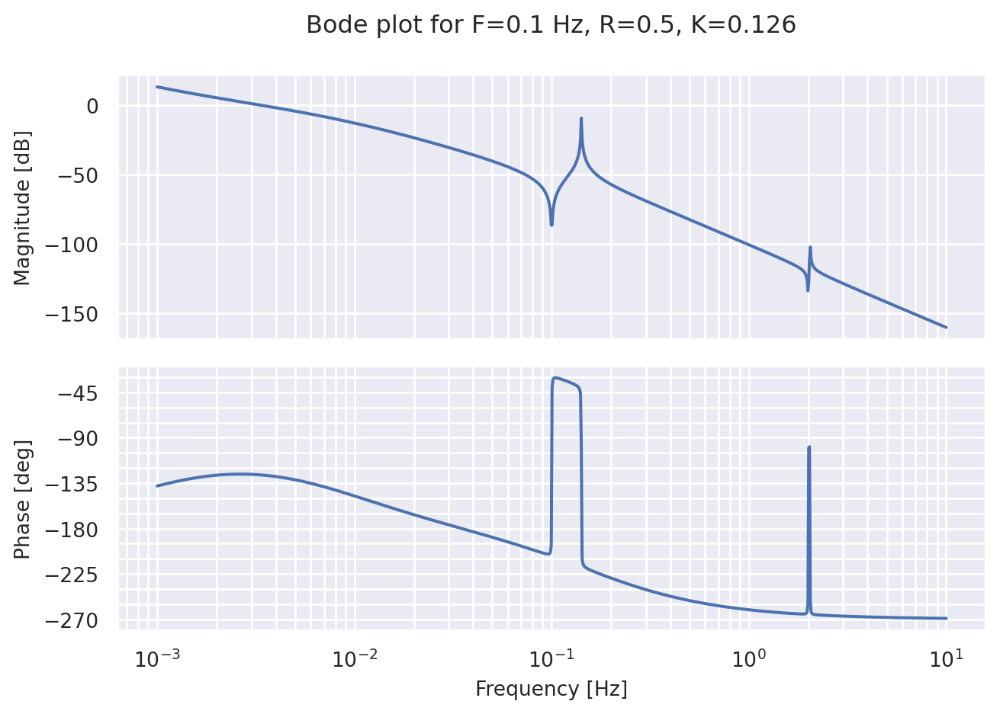
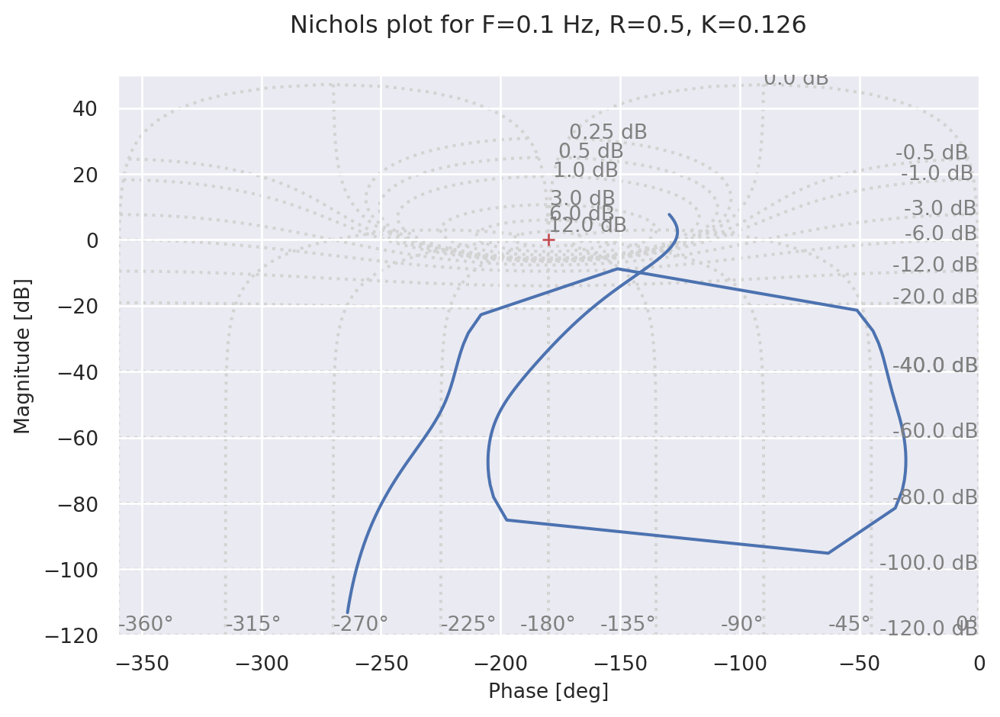
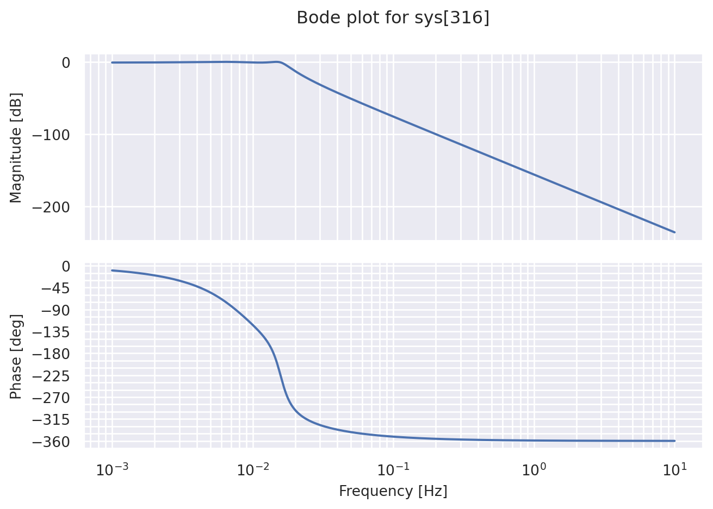
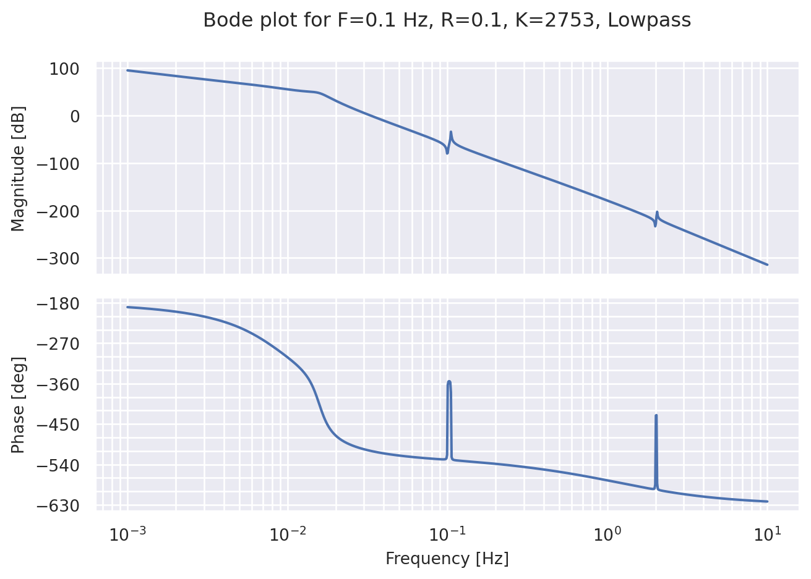
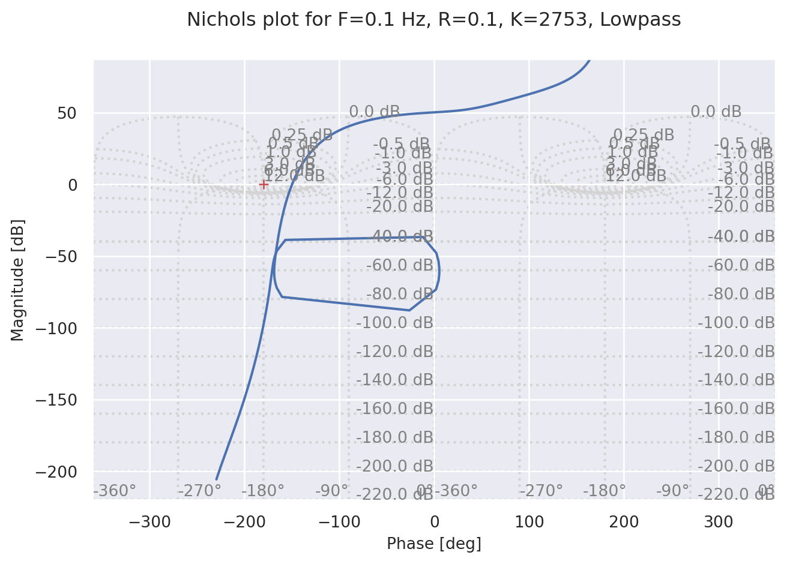

Código
import numpy as np
import matplotlib.pyplot as plt
import control as ct
import warnings
warnings.filterwarnings('ignore')
from scipy.signal import ellip, bessel, butter, cheby1
import seaborn as sns
sns.set_theme()
Is = 1069Elementos de Matemáticas Aplicadas para Aplicaciones Tecnológicas
import numpy as np
import matplotlib.pyplot as plt
import control as ct
import warnings
warnings.filterwarnings('ignore')
from scipy.signal import ellip, bessel, butter, cheby1
import seaborn as sns
sns.set_theme()
Is = 1069Se desarrollará un sistema de compensación LEAD-LAG que controle el ángulo \(\theta\) con una entrada de torque \(T\). La transferencia del sistema puede representarse como
\[ \frac{\theta(s)}{T(s)} = H_{sat}(s) H_{comp}(s) H_{LP}(s) \]
En donde \(H_{sat}(s)\) es la transferencia del satélite, \(H_{comp}(s)\) es la transferencia del compensador LEAD-LAG, y \(H_{LP}(s)\) puede eventualmente ser la transferencia de un filtro pasa-bajo.
def get_TF(rm2=0.34, f2=0.3, k=3.17, filtro=False, fc=0.1):
sys_sat = satelite_TF(rm2, f2)
sys_leadlag = lead_lag_TF(k)
sys = sys_sat*sys_leadlag
if filtro:
n, d = cheby1(4, 1, fc, analog=True)
sys_filtro = ct.tf(n,d)
sys = sys*sys_filtro
return sysEl satélite consiste en una estructura rígida más el aporte de apéndices flexibles, la antena y los paneles solares, su transferencia es dada por
\[ H_{sat}(s) = H_S(s) H_{flex1}(s) H_{flex2}(s) \]
En donde \(H_S(s)\) es dado por el momento de inercia de la estructura rígida
\[ H_S(s) = \frac{1}{I_S s^2} \]
Y la contribución de los apéndices flexibles es dada por
\[ H_{flex}(s) = \frac{I_S}{I_0} \, \frac{s^2+2 \xi_Z \omega_Z s + \omega_Z^2}{s^2 + 2\psi_{M} \omega_{M} s + \omega_{M}^2} \]
En donde la relación entre momentos de inercia del satélite y el apéndice flexible recibe el nombre \(R\) y la frecuencia de cantilever del apéndice es \(F_z\). Estos factores se consideran variables para los paneles solares.
A continuación se presentan diagramas de Bode y de Nichols del satélite ante diferentes valores de \(F\) y \(R\)
def satelite_TF(rm2=0.34, f2=0.3):
ns = 1
ds = np.array([Is, 0, 0])
tfS = ct.tf(ns,ds)
sys = tfS
rm1 = 0.04
I0 = Is*(1-rm1)
f1 = 2.0
psi1 = 0.001
w1 = 2*np.pi*f1
psi1m = psi1*np.sqrt(Is/I0)
w1m = w1*np.sqrt(Is/I0)
n1 = Is/I0*np.array([1, 2*psi1*w1, w1*w1])
d1 = np.array([1, 2*psi1m*w1m, w1m*w1m])
tf1 = ct.tf(n1,d1)
sys = sys * tf1
I0 = Is*(1-rm2)
psi2 = 0.001
w2 = 2*np.pi*f2
psi2m = psi2*np.sqrt(Is/I0)
w2m = w2*np.sqrt(Is/I0)
n2 = Is/I0*np.array([1, 2*psi2*w2, w2*w2])
d2 = np.array([1, 2*psi2m*w2m, w2m*w2m])
tf2 = ct.tf(n2,d2)
sys = sys * tf2
return sys
fs = [2*np.pi*1e-3, 2*np.pi*1e2]
mag,phase,w = ct.bode(satelite_TF(0.5,1.0),fs,plot=True,Hz=True,dB=True,deg=True,label="F=1.0 Hz, R=0.5")
mag,phase,w = ct.bode(satelite_TF(0.5,0.1),fs,plot=True,Hz=True,dB=True,deg=True,label="F=0.1 Hz, R=0.5")
mag,phase,w = ct.bode(satelite_TF(0.1,1.0),fs,plot=True,Hz=True,dB=True,deg=True,label="F=1.0 Hz, R=0.1")
plt.show()
ct.nichols(satelite_TF(0.5,1.0),[0.01,10],label="F=1.0 Hz, R=0.5")
ct.nichols(satelite_TF(0.5,0.1),[0.01,10],label="F=0.1 Hz, R=0.5")
ct.nichols(satelite_TF(0.1,1.0),[0.01,10],label="F=1.0 Hz, R=0.1")
plt.show()
La transferencia del compensador LEAD-LAG es dada por
\[ H_C(s) = K \frac{1}{s+1} \frac{T_D s + 1 }{\frac{1}{10}T_D s + 1} \]
En donde \(K\) es la ganancia DC del compensador. El factor \(T_D\) depende de \(K\), por lo que este factor no solo la amplitud de la transferencia sino también su forma. La dependencia de \(T_D\) respecto a \(K\) es dada por la ecuación
\[ T_D = 2\xi\sqrt{\frac{I_S}{k}} \]
A continuación se presentan los diagramas de Bode de \(H_C(s)\) para diferentes valores de \(K\)
def lead_lag_TF(k=3.17):
psi = 1.
Wn = np.sqrt ( k/Is )
kd = 2*psi*Wn*Is
Td = kd/k
nc = np.array([k*Td, k])
dc = np.array([Td/10, 1])
tfC = ct.tf(nc,dc)
sys = tfC
Tdelay = 1
ndelay = 1
ddelay = np.array([Tdelay, 1])
tfDelay = ct.tf(ndelay,ddelay)
sys = sys*tfDelay
return sys
mag,phase,w = ct.bode(lead_lag_TF(1),fs,plot=True,Hz=True,dB=True,deg=True,label="K=1")
mag,phase,w = ct.bode(lead_lag_TF(10),fs,plot=True,Hz=True,dB=True,deg=True,label="K=10")
mag,phase,w = ct.bode(lead_lag_TF(100),fs,plot=True,Hz=True,dB=True,deg=True,label="K=100")
plt.show()
Para diferentes valores de \(R\) y \(F\), se busca encontrar el \(K\) máximo que cumpla los siguientes requisitos de estabilidad
def findfirst(predicate, lst):
for i, val in enumerate(lst):
if predicate(val):
return i
return None
def first_local_maximum(lst):
for i in range(1, len(lst) - 1):
if lst[i] > lst[i - 1] and lst[i] > lst[i + 1]:
return i
return None
def cumple_requisitos(rm2, f2, k):
sys = get_TF(rm2, f2, k)
mag,phase,w = ct.bode(sys,plot=False)
ico = findfirst(lambda x: x<1, mag)
mag_dB = 10*np.log10(mag)
phase_deg = 180*phase/np.pi
phase_margin = abs(phase_deg[ico]+180)
imax = first_local_maximum(mag)
flex_gain = mag_dB[imax]
return flex_gain<=-6 and phase_margin>=30, w[ico]*2*np.pi, phase_margin, flex_gainSe propone utilizar una búsqueda binaria para automatizar la búsqueda del \(K\) máximo
def binary_search_predicate(predicate, low, high, tolerance=1e-3):
while high - low > tolerance:
mid = np.sqrt(low * high)
if predicate(mid):
low = mid
else:
high = mid
return mid if predicate(mid) else lowEl la frecuencia de cantilever de los paneles solares \(F_p\) varía entre 0,1 Hz y 1 Hz, mientras que la relación de su momento de inercia con el del satélite \(R_p\) varía entre 0,1 y 0,5.
A continuación se presentan los resultados del \(K\) óptimo para diferentes combinaciones de \(F_p\) y \(R_p\), indicando además cual de los criterios de estabilidad es el factor limitante de \(K\).
| \(F_p\) | \(R_p\) | \(f_{CO}\) | \(K_{Max}\) | Margen de fase | Ganancia modo f. |
|---|---|---|---|---|---|
| 0,1 Hz | 0,1 | 0,37 Hz | 1,02 | 50,94° | -6 dB |
| 0,1 Hz | 0,3 | 0,25 Hz | 0,46 | 25,04° | -6 dB |
| 0,1 Hz | 0,5 | 0,13 Hz | 0,12 | 53,10° | -6 dB |
| 0,5 Hz | 0,1 | 2,88 Hz | 71,3 | 30° | -6,27 dB |
| 0,5 Hz | 0,3 | 1,05 Hz | 8,30 | 44,90° | -6 dB |
| 0,5 Hz | 0,5 | 1,32 Hz | 13,3 | 42,53° | -6 dB |
| 1,0 Hz | 0,1 | 2,88 Hz | 71,1 | 30° | -15,1 dB |
| 1,0 Hz | 0,3 | 1,05 Hz | 71,3 | 30° | -8,17 dB |
| 1,0 Hz | 0,5 | 1,32 Hz | 71,4 | 30° | -9,76 dB |
Se observa que en ciertas situaciones el factor limitante es el margen de fase y en otras el factor limitante es la ganancia del modo flexible. A contiuación se presentan los diagramas de Bode y Nichols de ambos casos, uno limitado por el margen de fase y uno limitado por la ganancia del modo flexible.
fs = [2*np.pi*1e-3, 2*np.pi*10]
mag,phase,w = ct.bode(get_TF(0.1, 1.0, 71.18),fs,plot=True,Hz=True,dB=True,deg=True,title="Bode plot for F=1.0 Hz, R=0.1, K=71.18")
plt.show()
ct.nichols(get_TF(0.1, 1.0, 71.18),[0.01,10],label="F=1.0 Hz, R=0.1, K=71.18")
plt.show()
fs = [2*np.pi*1e-3, 2*np.pi*10]
mag,phase,w = ct.bode(get_TF(0.5, 0.1, 0.126),fs,plot=True,Hz=True,dB=True,deg=True,title="Bode plot for F=0.1 Hz, R=0.5, K=0.126")
plt.show()
ct.nichols(get_TF(0.5, 0.1, 0.126),[0.01,10],label="F=0.1 Hz, R=0.5, K=0.126")
plt.show()
A continuación se analiza el efecto de incorporar un filtro pasa bajo al sistema. Se considera razonable que el filtro rechaze la frecuencia de cantilever del modo flexible, por lo que se elige una frecuencia de corte \(f_c\) = 0,1 Hz.
Luego de evaluar diferentes opciones, se opta por elegir un filtro Chebyshev tipo 1 con una tolerancia de 1 dB de ripple en la banda de paso.
fs = [2*np.pi*1e-3, 2*np.pi*10]
n, d = cheby1(4, 1, 0.1, analog=True)
sys_filtro = ct.tf(n,d)
mag,phase,w = ct.bode(sys_filtro,fs,plot=True,Hz=True,dB=True,deg=True)
plt.show()
Los resultados de máximo \(K\) cuando se incorpora el filtro al sistema se presentan a continuación
| \(F_p\) | \(R_p\) | \(f_{CO}\) | \(K_{Max}\) | Margen de fase | Ganancia modo f. |
|---|---|---|---|---|---|
| 0,1 Hz | 0,1 | 1,32 Hz | 2753 | 30° | -16,4 dB |
| 0,1 Hz | 0,3 | 1,30 Hz | 2772 | 30° | -17,0 dB |
| 0,1 Hz | 0,5 | 1,30 Hz | 2840 | 30° | -16,4 dB |
| 0,5 Hz | 0,1 | 1,32 Hz | 2753 | 30° | -61,0 dB |
| 0,5 Hz | 0,3 | 1,32 Hz | 2753 | 30° | -53,5 dB |
| 0,5 Hz | 0,5 | 1,32 Hz | 2753 | 30° | -57,9 dB |
| 1,0 Hz | 0,1 | 1,32 Hz | 2753 | 30° | -80,1 dB |
| 1,0 Hz | 0,3 | 1,32 Hz | 2753 | 30° | -75,0 dB |
| 1,0 Hz | 0,5 | 1,32 Hz | 2753 | 30° | -79,1 dB |
Además, se presentan diagramas de Bode y Nichols del sistema, en el caso de \(F_p\) = 0,1 Hz y \(R_p\) = 0,1
fs = [2*np.pi*1e-3, 2*np.pi*10]
mag,phase,w = ct.bode(get_TF(0.1, 0.1, 2753, True),fs,plot=True,Hz=True,dB=True,deg=True,title="Bode plot for F=0.1 Hz, R=0.1, K=2753, Lowpass")
plt.show()
ct.nichols(get_TF(0.1, 0.1, 2753, True),[0.01,10],label="F=0.1 Hz, R=0.1, K=2753, Lowpass")
plt.show()
En presencia del filtro se observa que el factor limitante en todos los casos es el margen de fase, lo cual es de esperarse ya que la ganancia del modo flexible es rechazada por el filtro.
Además, se observa que el \(K\) máximo posible es consistente para todas las combinaciones de \(F_P\) y \(R_P\) evaluadas, lo cual no sucedía en ausencia del filtro, y este valor de \(K\) es mucho mayor que los valores admisibles en la ausencia del filtro. Por estos motivos se concluye que la presencia del filtro incrementa el rendimieto del sistema.
Para elegir el filtro, se buscó que este tenga una transición rápida a la banda de rechazo, para así rechazar la ganancia del modo flexible incluso cuando la fecuencia de cantilever está cerca de la frecuencia de corte del filtro. Los tipos de filtro con transición rápida a la banda de rechazo son el filtro elíptico y el filtro Chebyshev, sin embargo, el filtro elíptico tiene una alta distorsión de fase en la banda de paso, lo cual afecta drásticamente al criterio de estabilidad del margen de fase. Por estos motivos se consideró que el filtro Chebyshev es la mejor opción.